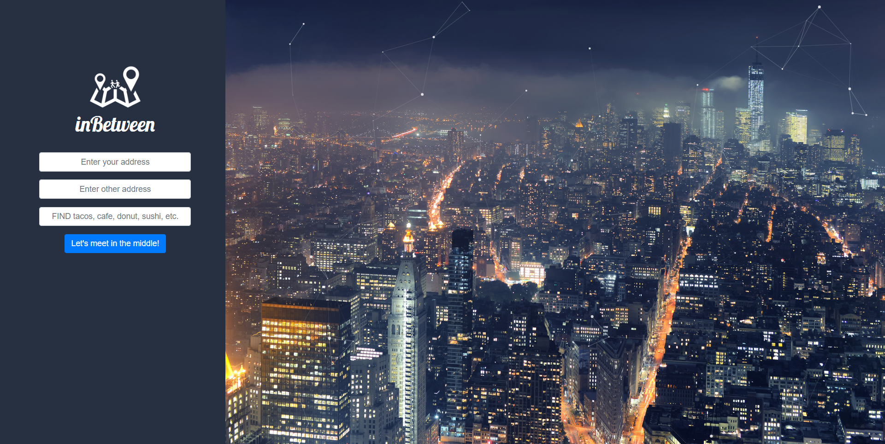
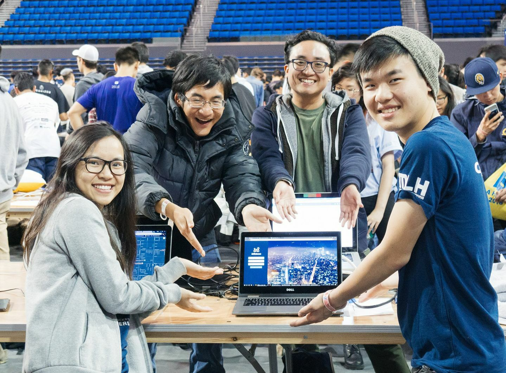

[ Justin Lonh ]
LA Hacks 2018
Languages/Technologies Used: Python, Django, HTML, JavaScript, FourSquare API, Google Maps API, Google Cloud Platform
This project was a collaborative effort in a team of 5 that included me, Shayla Luong, Irene Vu, Marawin Cheang and Duy Vu at the LA Hacks 2018 hackathon. In under 36 hours, we created a prototype web application that allows the user to input two locations and any keywords to find points of interest roughly halfway between the two locations provided. The purpose of our web application was to aid in finding places to meet up for two people so that neither party would need to travel too far.
I personally worked on the researching and integration of the Google Maps Directions API for route calculation and map display, and FourSquare's Places API to search for recommended places. I also personally managed the deployment of the web application using Google Cloud Platform's App Engine.
For the Directions API, I set up the proper request for directions between the two locations provided by the user to allow for calculation of the halfway point along the possible route between the two locations. I realized that this approach would be more practical instead of simply calculating the halfway point of the Euclidean distance between the two provided locations because there is not necessarily a perfectly straight route to the halfway point. Depending on the available freeways and roads, the Euclidean halfway point would not necessarily be the same as the halfway point of the route taken, and as users would most likely be driving if using the application, taking the halfway point of the route between the two locations made more sense, and was a very important consideration.
For the FourSquare API, I similarly set up the proper request and response parsing for recommended places once the application had finished finding the driving halfway point using Google Maps' Directions API. The application would then take the recommendations data provided and present them to the user, alongside a map also provided by the Maps Embed API.
The deployment of the application using GCP's App Engine was actually the most frustrating part of the project. There ended up being a few specific configuration settings required to specifically allow a Django application to work with App Engine, but I found that the information I needed was quite spread out through different documentation pages, making it difficult to put everything together. Also, when attempting to deploy our application, each attempt would take about 15 minutes or so before any sort of success or error message would appear at all, and there were many, many times where I would have to wait 15 minutes before I would be told to fix one configuration setting. It also didn't help that the deployment stage of our project was closer to the end of the 36 hour time limit for the hackathon. However, after much trial and error, I was able to successfully deploy our project into a functional website.
I think the most valuable lesson I learned from this project was dealing with documentation to successfully implement the features needed for a project. Although documentation may sometimes be incomplete for newer technologies like Google Cloud Platform, everything is still there, and being able to understand documentation and be persistent in researching what is needed for a specific project has helped me in all my subsequent projects ever since.